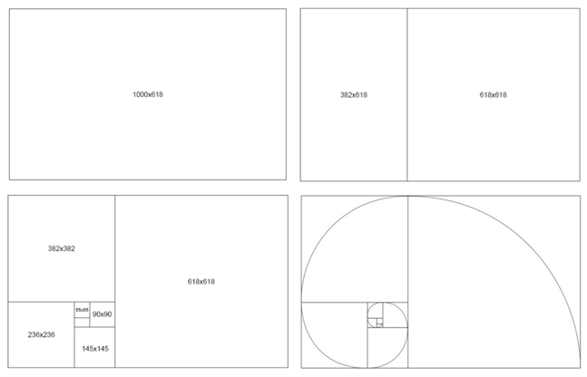
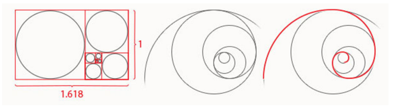
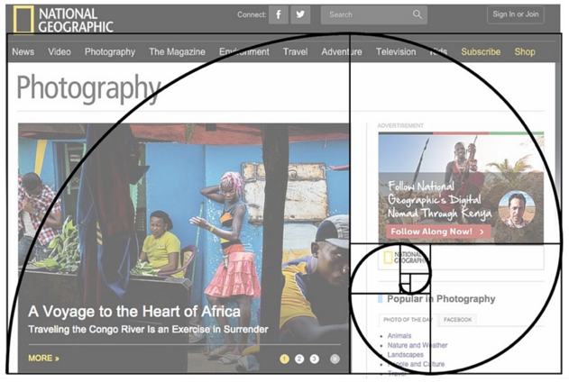

GOLDEN RATIO
GOLDEN RATIO IN WEB DESIGN: MATH & BEAUTY
The golden ratio is known for the proportions 1:1.618. Of course, the mathematical equation at work is much more complicated than that, but this is the base for the creation. Just to give you an example, let’s look at rectangle with golden proportions:
We take the width of 1000 pixels and divide it by 1.618 to get a height of about 618 pixels. Then we add a 618 x 618 square on the right side of the canvas, leaving behind a 382 x 618 rectangle on the left side – another golden rectangle! As you could get, a “Golden Rectangle” is a rectangle whose length is 1.6180 times its width. The golden rectangle is the most used shape to visualize the golden ratio, but you can also use circles and triangles in a very similar way.
For instance, as you can see on the picture you can create an approximate golden spiral shape out of circles and those circles fit perfectly inside a system of golden rectangles. It is again aesthetically appealing look and tends to achieve visual harmony. A lot of designers use it, a lot of designers don’t. It’s up to you, normally if a person like numbers, math and perfection, he uses golden ratio to be 100% sure the design is well thought and calculated.
LAYOUT
Golden ratio is also used to divide space between the body of the website and the sidebar. The principle is the same, body is 1.618 times larger than the sidebar. Let’s say you want to find the width of your Main Content and Sidebar columns. You would take the total width of your content area, for example 900px and divide it by 1.62, the result is 555.55px. It is not necessary to be that accurate, so you can actually round it to 555px. Now you know your main content element will be 555px wide and your sidebar will be 345px.
